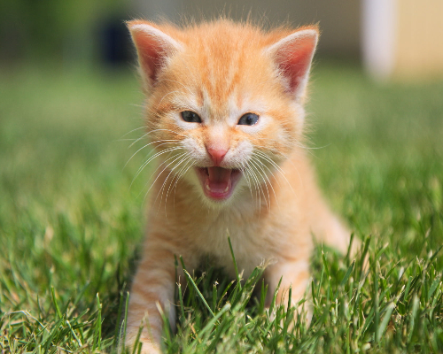
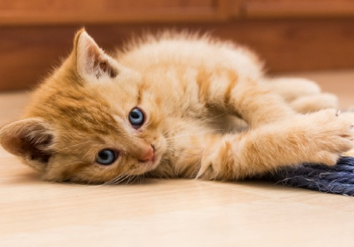

Esse filhote de gato laranja chamado kittie é uma fofura irresistível! Ele tem uma pelagem laranja brilhante e olhos curiosos e brilhantes. Com sua personalidade cativante, ele é um companheiro perfeito para qualquer pessoa que esteja procurando um novo amigo felino.
Ele é um gatinho brincalhão e cheio de energia, sempre pronto para explorar o mundo ao seu redor. Ele adora brincar com bolinhas, perseguir penas e escalar arranhadores. Com ele por perto, você nunca ficará entediado
Além disso, ele é muito carinhoso e afetuoso. Ele adora receber carinho na barriga e ronrona alto para mostrar o quanto está feliz. Ele também gosta de se aconchegar no colo do seu humano e receber muitos abraços.


perguntas usuais
o gato tem todas as vacinas que ele precisa para viver bem, e tambem caso precise de mais no futuro nossa instituição faz a aplicação gratuitamente
os filhotes da nossa instituição podem vir de pessoas que tem gatos e não podem ter mais filhotes ou da rua que são encontrandos sem mãe, garantimos que
os gatos são bem tratados aqui, e tambem queremos que ele seja bem tratado com voce
para isso e bem simples, apenas confirme um agendamento conosco aqui, e seja rapido, pois não podemos prometer que ele não sera doado antes